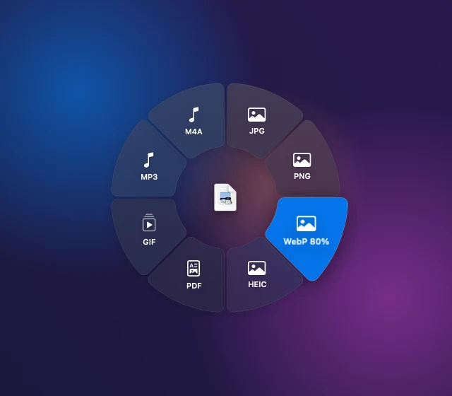

Shift Convert
JPG · PNG · WebP 80% · HEIC · PDF · GIF · MP3 · M4A
macOS 13+ · Apple silicon · free
Drag a file in Finder, tap Shift, Command or Control, and drop it on a radial wheel. Convert, annotate, compress or share it without leaving the spot.

Start dragging a file in Finder.
Hold Shift, Command or Control (no Option or other modifiers) to pick a wheel. Release the key to hide it.
Drop on a segment to run it. Drop anywhere else and nothing runs.
Pick a file, choose a wheel, drag the file chip onto a segment. Only actions that accept the file show up, just like the app. Keyboard: S, C or K switches wheel, Tab to a segment and press Enter.
No actions on this wheel accept this file.
Each key opens its own wheel of up to 8 segments.
JPG · PNG · WebP 80% · HEIC · PDF · GIF · MP3 · M4A
Annotate · Crop · Add BG · Redact · Edit · Compress · 50% · Rotate
AirDrop · Reveal · Copy file · Copy image · Copy path · Terminal · Zip · SHA-256
Native windows open straight from the wheel and save a copy beside the original.
Move marks, zoom with pinch or ⌘= / ⌘−, pan by scrolling. Saves name-annotated.ext. Redact opens the same window with a solid block selected and saves name-redacted.ext.
Apply writes name-crop.ext. On mp4, mov and m4v, Crop opens a video window with a frame slider and exports with ffmpeg.
Frame a screenshot on a backdrop. Saves name-bg.ext.
Preview windows with a filmstrip for mp4, mov and m4v, exported in the background with ffmpeg. Turn on the Video pack in Settings.
Every action is one entry in ~/.config/flickwheel/actions.json. The file is created on first launch and never overwritten.
[{
"id": "copy-path",
"label": "Copy path",
"wheel": "control",
"accepts": ["*"],
"command": "printf '%s' \"$INPUT\" | pbcopy"
}]INPUT, DIR and NAME environment variables, never pasted into the command string, so odd file names cannot break it./bin/zsh -lc, once per file, stopped after 120 seconds.actions.json.name 2.gif) instead of replacing your file, and the menu bar lets you cancel a job or reveal the last results.There is no download yet. FlickWheel is built from source and is ad-hoc signed, not notarized.
ffmpeg for some actions: brew install ffmpegxcodegen generate
xcodebuild -scheme FlickWheel -configuration Debug build